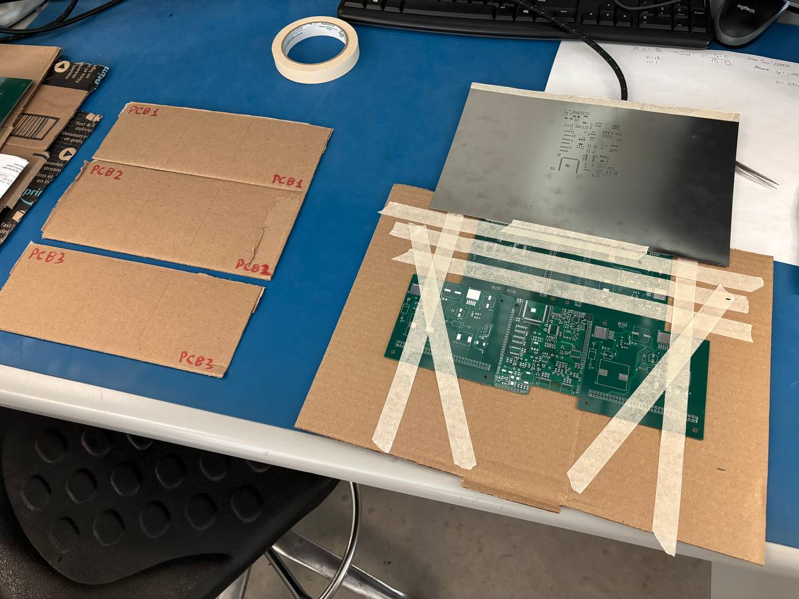
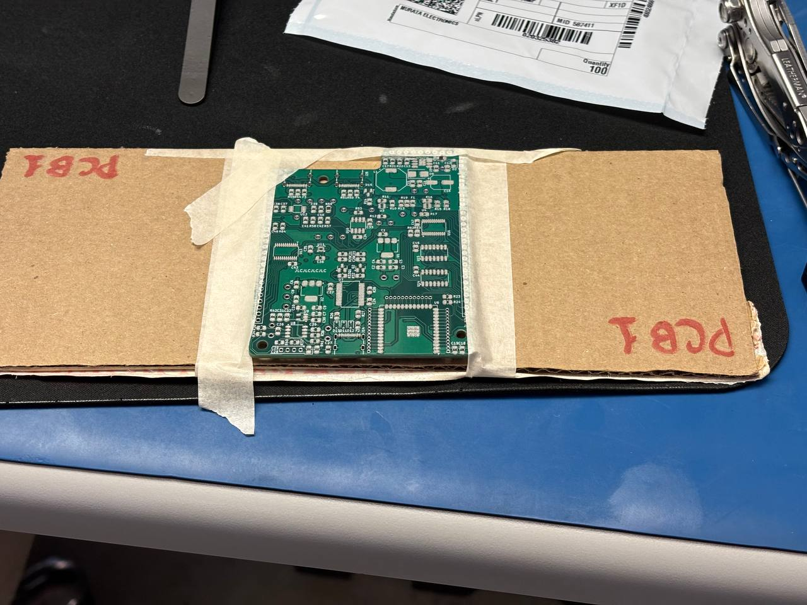
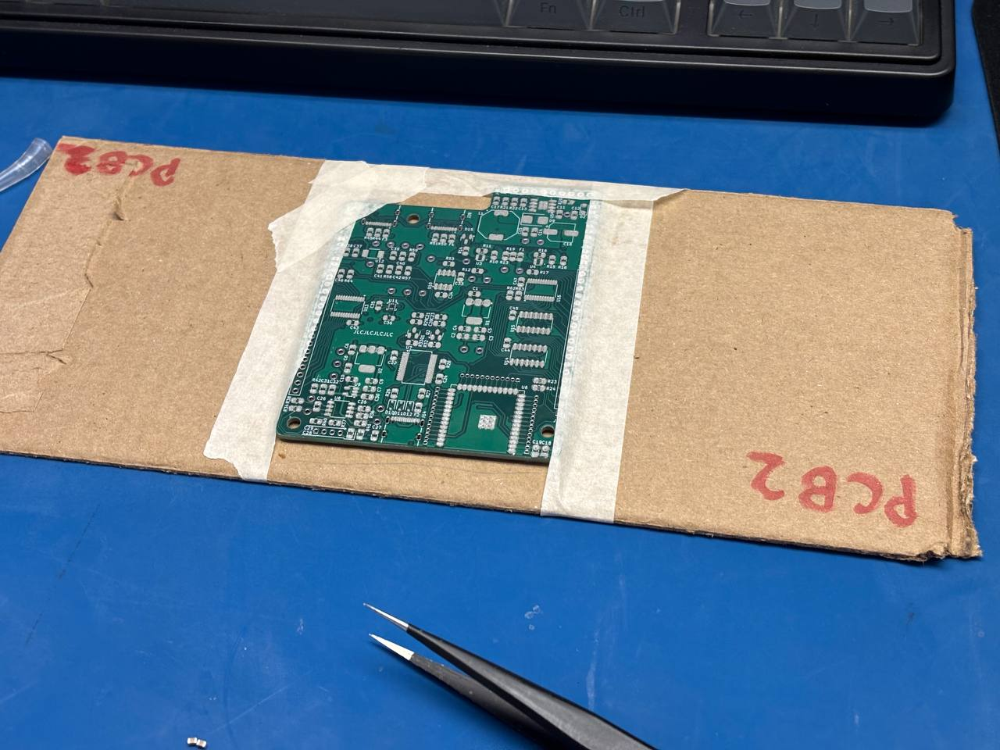
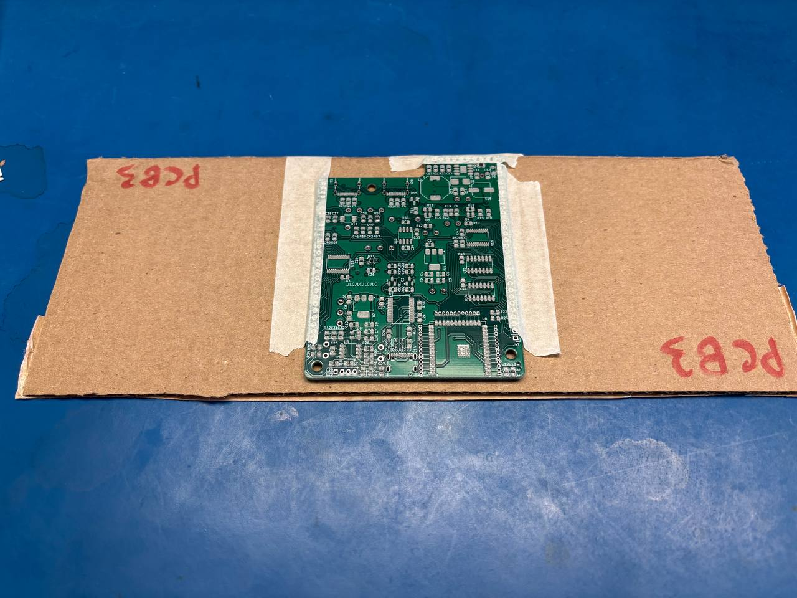
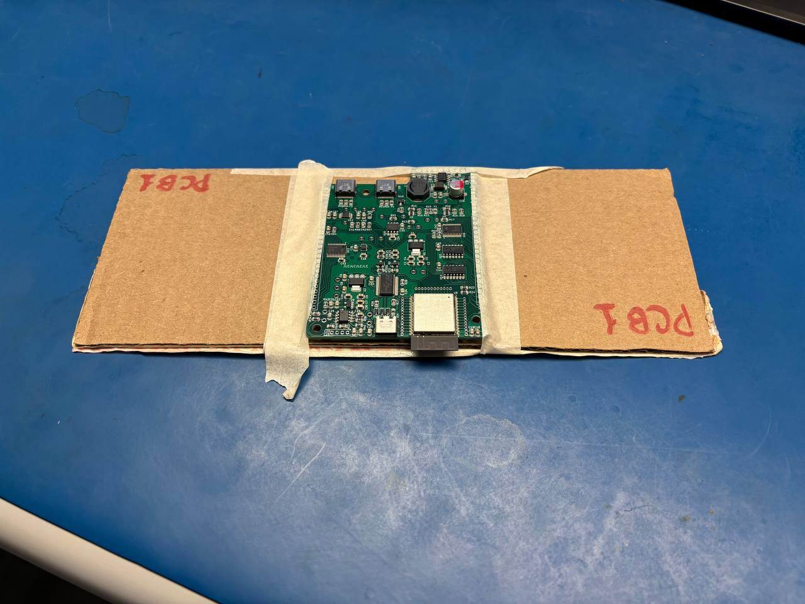
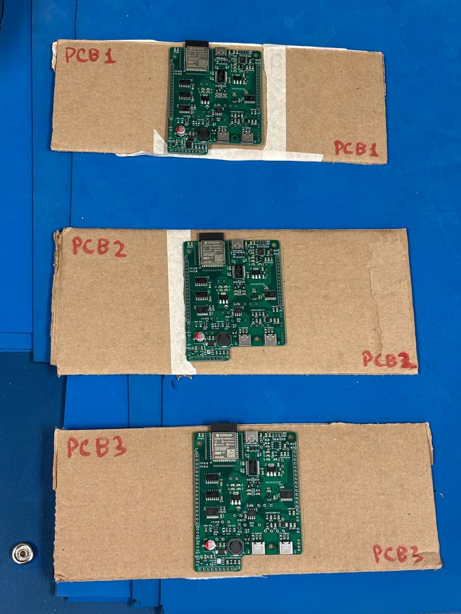
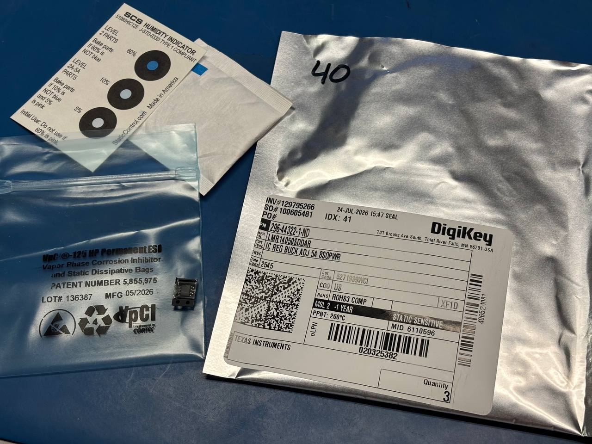

PCB Assembly
Today, we needed to assemble the PCBs because the work required access to a reflow oven. By reflowing the boards today, I could use the long weekend to finish the assembly through manual cleanup and bottom-side component population.
The PCB design uses components with challenging packages, including:
- The LGA package used by the
BMA400accelerometer IC. - The DRL package used by the
TPS2117DRLRpower OR-ing ICs.
From my prior experience, I noticed that the longer solder paste sits on a board during component placement, the poorer the reflow quality becomes. It is therefore advantageous to populate each board quickly. Populating several boards in parallel is also faster overall than completing one board at a time.
I decided to produce three boards initially, with all submodules installed in the Car Controller (CC) PCB configuration. In contrast, the Floor Controller (FC) configuration excludes the following modules:
- The accelerometer module.
- The load-cell module.
- The 5 V regulator.
Collaborative Population Procedure
To accelerate the component-placement process, I asked Nick Kapuka to help. I developed the following procedure for collaborative PCB population:
- Label each DigiKey component bag with a number that is easier to read than the part number printed on the bag.
- Separate the bags into groups based on placement priority:
- Passive components, including resistors and ceramic capacitors.
- Small semiconductor components, mainly diodes.
- Large semiconductor components, including ICs.
- Large passive components, including electrolytic capacitors and inductors.
- The
BMA400IC, placed near the end because of its small size and LGA package. - The
ESP32-S3-WROOM-1module, one of the largest parts and therefore placed last.
- Create a spreadsheet in which each row records:
- The DigiKey part number, used for verification, spreadsheet organization, and formulas.
- The bag number, which provides an easily readable identifier for each bag.
- An “Is bag labelled” checkbox, used while locating and labelling each bag.
- PCB-population fields for each board, including a “Populated by” initials dropdown and an “Is populated” checkbox.
- The list of reference designators to populate with each component.
- Build a stencil jig from spare boards and tape so that each new board can be aligned easily for solder-paste application. I cut the stencil by first scoring it with a utility knife and then completing the cut with a sheet-metal press. Skipping the scoring step produces a poor-quality cut in the stencil's thin aluminium sheet.
- Cut one approximately 30 cm by 12 cm cardboard base for each unit. These labelled bases improve stability and make the PCBs easier to pass between workstations.
- Begin population after completing the preparations:
- Apply solder paste to each board.
- Tape each board to its cardboard base. The pin-header areas along the sides provide suitable attachment points because they will not receive SMD components.
- Each person selects a bag from the current priority group and records their initials beside the corresponding board unit and bag number.
- The person places every listed component on that PCB and then checks the “Is populated” box.
- The PCB and its cardboard base are passed to the next person. The person passing the board gives an audible warning to prevent sudden movements from toppling components.
- When one priority group is exhausted, continue with the next group.
This system allowed Nick and me to populate three complete units in approximately three hours. The completed population checklist, including the recorded process timestamps, is available as a project document.[1]


Population and Reflow
Following Professor So-Ra Chung's recommendation, we ran the reflow machine once without a board to preheat it and stabilize its temperatures.








Issues Discovered During Population
- The configured quantity for the load-cell module was entered incorrectly as two instead of three, so PCB 3 is currently missing that block.
- DigiKey shipped only one
LMR14050, although three units were ordered. - I forgot to update the 0805 fuse footprints after discovering that suitable fuses were unavailable in that package. The selected components use 1812 packages.
- The silkscreen labels for the upstream and downstream CAN USB-C connectors are missing.

LMR14050 componentsDespite several shorted pins, the overall reflow process was successful.

Lessons for Future PCB Projects
- A 3D-printed jig that uses the mounting holes would be preferable to cardboard bases. The tape was difficult to remove without disturbing components.
- Footprint corrections should not be deferred when a component is replaced during PCB design. If necessary, the footprint field should be cleared immediately; ideally, the symbol should be updated properly.
- The checklist template should support component removal without disrupting the bag numbers. In the current checklist, erroneous components had to be retained with a reduced font size.
- When population is nearly complete, one person should start the reflow machine for a dry run to reduce waiting time.